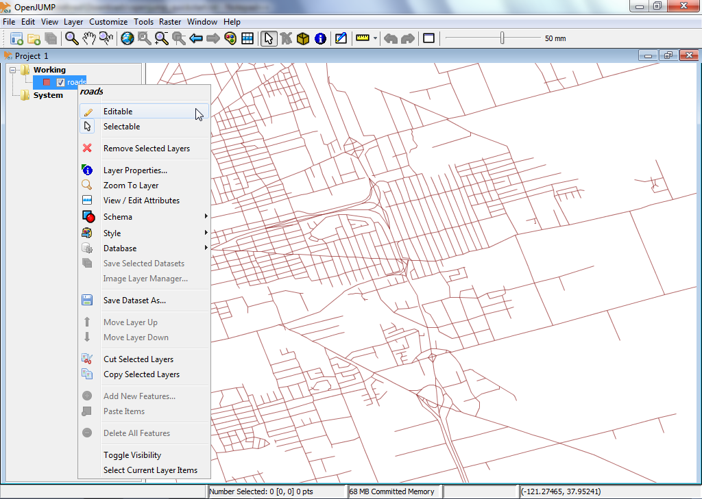

OpenJUMP GISクイックスタート¶
OpenJUMPは、ベクタGISデータの表示と編集を容易にするデスクトップGISプログラムです。PLUSエディションは、ラスタデータのサポート分析も行います。
OpenJUMPの開始¶
デスクトップから を選択します。
OpenJUMPのユーザインタフェースには、4つの基本コンポーネントがあります。
- [1] 最初のものは、ほとんどの機能にアクセスするためのトップレベルのメニューバーです。
- [2] 2番目は、メニューバーのすぐ下にあるメインツールバーです。ボタンを使用すると、最も重要な表示機能やナビゲーション機能にアクセスできます。
- [3] 3番目は左側にあるビューで、アクティブなプロジェクトのレイヤリストを表示します。
- [4] 4番目はマップビューです。これは、各マップの空間データをグラフィカルに表現した、実際のレイヤです。
最後に、下部に情報バーが表示され、マウスポインタの座標、処理レポート、メモリ使用量が表示されます。プロジェクトウィンドウには、レイヤリストとレイヤビューがあります。OpenJUMPの各インスタンスには、複数のプロジェクトを含めることができます。このクイックスタートでは、単一のウィンドウで作業します。

ESRIシェープファイルを開く¶
- OpenJUMPのトップレベルのメニューバーで、 を選択します。これにより、空間データを含むファイルを開くためのダイアログボックスが表示されます。
- ESRIシェープファイルをブラウズします。shp拡張子のファイルを探します(例えば、LiveDVDの /home/user/data/natural_earth2/ne_10m_admin_0_countries.shp )。
- ファイルを選択し、ダイアログで Finish ボタンをクリックします。しばらくすると、マップビューでシェープファイルのデータを見ることができます。レイヤリストには、データ用に作成された新しいレイヤも表示されます。レイヤの名前は、シェープファイルの名前と一致します。

ちなみに
シェープファイルをレイヤのビューに直接ドラッグ&ドロップする方法もあります。
レイヤのスタイル¶
- レイヤリストで、レイヤ名を右クリックします。これにより、ポップアップメニューが表示されます。
- を選択します。スタイルの変更ダイアログには5つのタブがあり、レイヤビューのマップの表示方法を変更できます。これには、ストロークの色、塗りつぶし色、線のスタイルと太さ、透過性、ラベルの追加、レイヤを表示する最大と最小のスケールの決定が含まれます。
{kind=link}

レイヤの地物のジオメトリを編集する¶
レイヤリストで、レイヤ名を右クリックします。これにより、ポップアップメニューが表示されます。
チェックマークが表示されるように、メニュー項目 「Editable」 をクリックします。これにより、右側のマップビュー上に新しい浮動ツールバーが開きます。このツールバーには、地物のジオメトリを編集するためのボタンがあります。

簡単に編集してみましょう。最初にジオメトリを選択し、次にジオメトリの点を移動する必要があります。そのためには、まず編集ツールバーにマウスカーソルが表示されているボタン(左上ボタン)をクリックします。
これを有効にして、マップビューの1つの地物をクリックして選択します。選択が成功すると、地物の線の色が黄色に変わり、地物の各点(頂点)に小さな黄色の正方形が表示されます。

次に、中央に黄色の正方形がある青い十字が表示されているボタンをクリックします。 Move Vertex Tool (ボタンの上にマウスカーソルを置くとボタンの説明が表示されます)。これで、マップのビュー上にマウスカーソルを移動すると、マウスカーソルが小さな黒い十字に変わります。

これを使用して、前に選択したジオメトリの頂点の1つをクリックしてドラッグ(マウスボタンを押したまま)し、移動してみてください。

{kind=link}
次のステップ¶
これは、OpenJUMPを使用するための最初のステップです。読むべき多くの資料がそろっています。
- OpenJUMPのチュートリアルはこちらからダウンロードできます: https://sourceforge.net/projects/jump-pilot/files/Documentation/
- OpenJUMPのウィキは: http://ojwiki.soldin.de/index.php?title=Main_Page からアクセスできます。
- OpenJUMPユーザメーリングリスト: https://groups.google.com/forum/#!forum/openjump-users で、すばやくヘルプを見ることができます。
- OpenJUMPの最新バージョンはこちら: https://sourceforge.net/projects/jump-pilot/files/OpenJUMP/